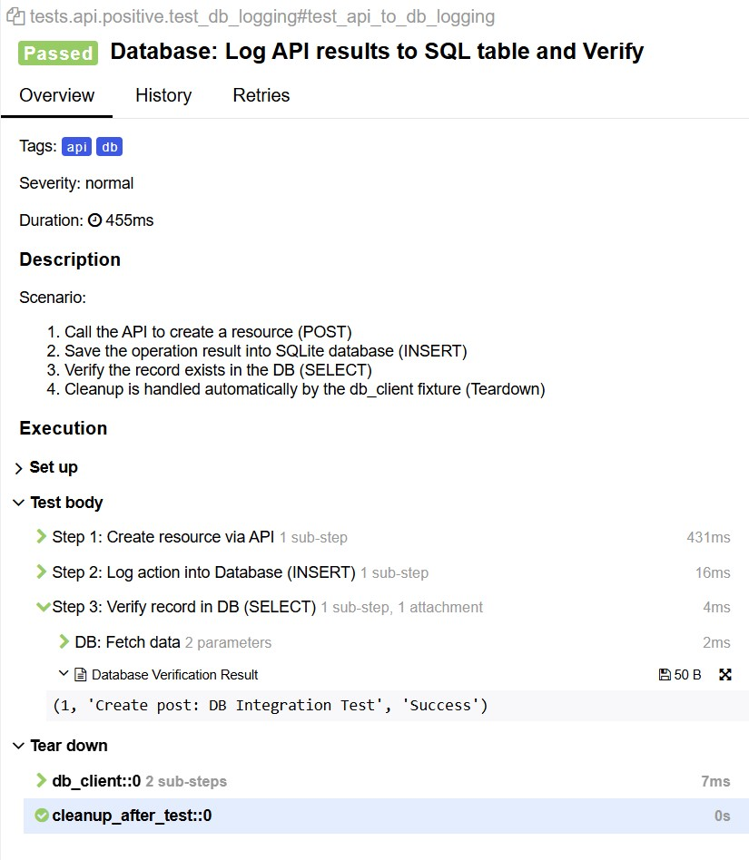

Eco-Hybrid-Lab
Hybrid Test Automation Framework: UI • API • Database
This project demonstrates a hybrid approach to test automation, integrating UI, API, and Database layers into a single, scalable framework
📊 Performance & Observability

Summary: 100% Pass Rate | 10 Tests | ~27s Total Duration
API/DB Layer (< 1s): High-speed integration checks using requests and SQL direct access
UI Resilience (2s - 4s): Rapid UI feedback via resource blocking and native event listeners
Full E2E Flows (8s - 9s): Stable business logic validation using the POM pattern
🔍 Deep Traceability Example (Click to expand)
For the API to DB Sync scenario, the report captures every internal step with raw data evidence:
- POST Request: Resource creation verified in 431ms
- DB Logging: Action recorded via SQLAlchemy in 16ms
- Data Audit: Direct SQL SELECT verifies persistence:
(1, 'Create post...', 'Success') - Auto-Cleanup: Environment reset via Tear down fixtures automatically

Key Takeaway: By utilizing a hybrid approach, 80% of the test suite provides feedback in under 4 seconds, significantly reducing CI/CD pipeline costs
🟢 Positive Scenarios (Happy Path)
| Scenario | Layer | Technical Highlights & Patterns | Validation & Data Handling | Risk Mitigated |
|---|---|---|---|---|
| E2E Shopping Flow | Hybrid | POM, Session persistence, API-driven preconditions | UI State + URL verification; Real-time session auth | Broken conversion funnel |
| API Data Contract | API | Type checking (ID as int), header validation | JSON Schema; Status 201; Header integrity | Integration mismatches |
| API to DB Sync | API + DB | Singleton DB Client, Automated SQL Teardown | Cross-layer integrity (SQL SELECT match) | Silent data loss in backend |
| Add to Cart | UI | Dynamic dialog handling, wait_for_selector logic |
Cart persistence; Alert automation | UI/Logic synchronization |
🔴 Negative Scenarios (Resilience & Edge Cases)
| Scenario | Layer | Technical Highlights & Patterns | Validation & Data Handling | Risk Mitigated |
|---|---|---|---|---|
| Empty Checkout | UI | Turbo Mode Asset blocking, 3.7s speed, dispatch_event |
Alert Interception; No-wait actionability | UI validation bypass |
| Broken Links Audit | UI / API | Multi-threading: 11 parallel workers, HEAD requests | HTTP Status 200/300; Concurrent discovery | Negative SEO & Dead UX |
| Auth Resilience | UI | Event-driven: expect_event("dialog") (No sleep) |
Regex alert text match; Dynamic waiting | Flaky tests / Async race conditions |
| Malformed API Data | API | Schema resilience, Type-mismatch payloads | JSON Contract; Documentation of server flaws | Backend crashes on bad input |
| API Failure Logs | API + DB | Integrated Error Logging (404 -> DB) | Status code mapping to SQL audit logs | Untraceable system errors |
🛠 Engineering DNA (Best Practices)
Zero-Sleep Policy
No static timeouts. All asynchronous states are handled via Playwright's native event listeners and smart assertions
Extreme Performance
Optimized execution through strategic resource blocking and multi-threaded processing
Deep Observability
Automated Allure reporting with integrated screenshots, browser trace logs, and SQL snapshots
Clean State Management
Singleton-based database connectivity with automated transaction teardowns for environment purity
🚀 Tech Stack
- Python 3.13
- Playwright (Chromium)
- Pytest
- SQLAlchemy
- SQLite3
- Allure Reports
- Python-dotenv
📂 Project Structure
. (root)
├── data/ # Test data and DB initialization
├── pages/ # Page Object Models (UI layer)
├── tests/ # Test suites (UI, API, Integration)
├── utils/ # API clients, DB wrappers, Loggers
├── docs/ # Documentation and static assets
│ ├── README.html # This architecture report
│ └── *.jpg # Report screenshots
├── .env.example # Environment variables template
├── pytest.ini # Test runner configuration
└── requirements.txt # Project dependencies
├── data/ # Test data and DB initialization
├── pages/ # Page Object Models (UI layer)
├── tests/ # Test suites (UI, API, Integration)
├── utils/ # API clients, DB wrappers, Loggers
├── docs/ # Documentation and static assets
│ ├── README.html # This architecture report
│ └── *.jpg # Report screenshots
├── .env.example # Environment variables template
├── pytest.ini # Test runner configuration
└── requirements.txt # Project dependencies